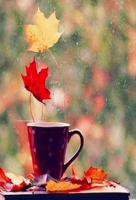

Autumn Teahouse
Rain, tea and a good book!
Autumn Teahouse is located next to the BC Ferries terminal in Whaletown, on Cortes Island, BC. A cozy little spot to spend time while you're waiting for the next ferry, or just need a break from the ordinary.
Our primary focus is in the over 50 kinds of loose tea we offer, including black teas, green teas, herbal (tisanes), and many other flavored specialty blends. We serve our teas hot and iced, and sell loose teas by the ounce. In addition, we sell premium chocolates and gift baskets, and offer daily pastries to accompany tea orders. Since we are not intending to compete with coffee giants such as Starbucks, we brew only one kind of coffee daily, as a courtesy to our customers.
In addition, our space encourages you to relax, unwind, leaf peep and watch the rain coming down outside in the fall. We have provided a wall-to-wall book exhange, as well as board games for children of all ages to enjoy.
We welcome you to explore our website to learn about us and see what we have to offer in more detail. Furthermore, we invite you to come visit us in person, on Cortes Island, and enjoy a cup of tea!